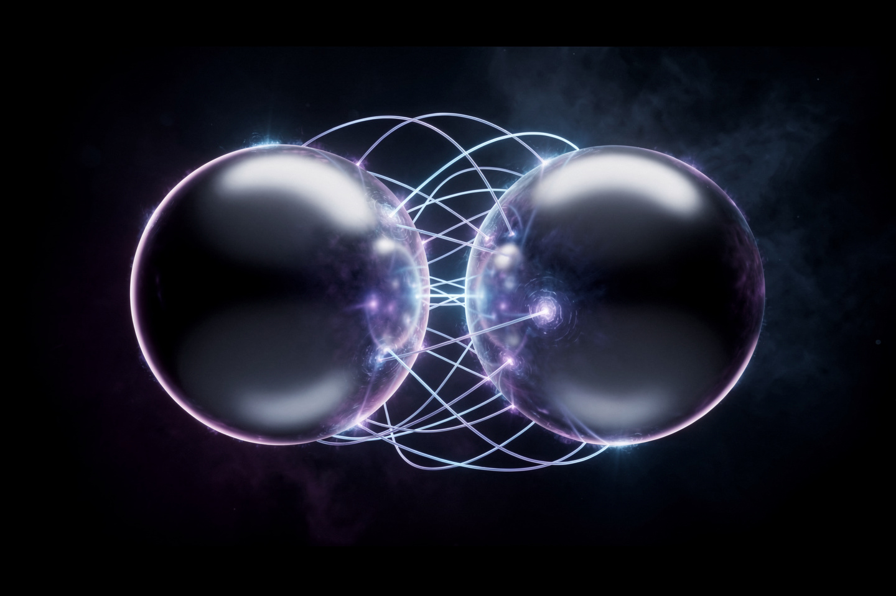
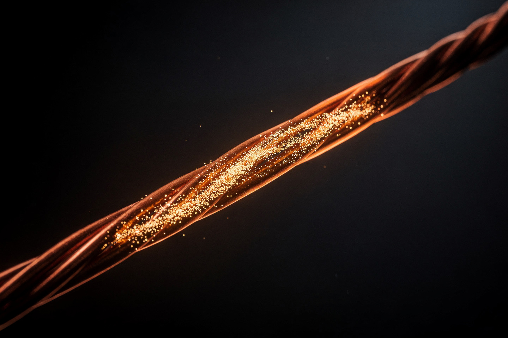

Рабочая заметка · электромагнетизм · часть XIII
Закон Кулона и закон Ома: от неподвижного заряда к текущему току
Один закон описывает застывшие заряды, отталкивающиеся или притягивающиеся в пространстве; другой — что происходит, когда эти заряды срываются с места и начинают течь.
Шарль Кулон в 1785 году измерил, как электрическая сила убывает с расстоянием — точно так же, как гравитация (закон обратных квадратов, часть VII). Спустя 41 год Георг Ом обнаружил другую, не менее простую закономерность: ток через проводник прямо пропорционален приложенному напряжению. В этой заметке — оба закона с числами и то, как одна и та же величина — электрический заряд — связывает статику Кулона с динамикой Ома через простое определение тока: I = q/t.


Два закона, одна структура
| Закон | Формула | О чём |
|---|---|---|
| Кулона (1785) | F = kq₁q₂/r² | сила между двумя НЕПОДВИЖНЫМИ зарядами |
| Ома (1826) | I = U/R | ток через проводник под напряжением |
Кулон работает со СТАТИЧЕСКИМИ зарядами — просто силой притяжения/отталкивания в пространстве, без движения. Ом описывает ДИНАМИКУ — что происходит, когда заряды организованно движутся по проводнику под действием разности потенциалов. Мост между ними — простое определение: сила тока I — это количество заряда q, проходящее через сечение проводника за время t: I = q/t (подробный численный переход — §4).
Закон Кулона: сила между зарядами
Формулировка. Сила взаимодействия двух точечных зарядов пропорциональна их произведению и обратно пропорциональна квадрату расстояния:
Численный пример: два заряда по q₁ = q₂ = 1 мкКл (микрокулон) находятся на расстоянии r = 3 см = 0.03 м. Найдите силу их взаимодействия.
Сравните: гравитационное притяжение между двумя телами по 1 кг на расстоянии 1 м — примерно 6.674×10⁻¹&sup9; Н, ничтожно мало. Электрическая сила между двумя электронами на том же расстоянии — примерно 2.3×10⁻²⁸ Н, но это ВСЁ РАВНО в ~10⁴⁰ (десять тысяч триллионов триллионов триллионов) раз сильнее их взаимного гравитационного притяжения. Единственная причина, почему в повседневной жизни гравитация «главнее» электричества — то, что обычная материя почти идеально электрически нейтральна (заряды скомпенсированы), а массы складываются без такой компенсации.
Закон Ома: ток как поток
Формулировка. Сила тока прямо пропорциональна напряжению и обратно пропорциональна сопротивлению:
Классическая аналогия — водопровод: напряжение U — это «напор» (разница давлений на концах трубы), сопротивление R — узость самой трубы, ток I — сколько воды в секунду реально протекает. Широкая труба (маленькое R) при том же напоре пропускает больше воды (тока); узкая труба (большое R) — меньше.
Численный пример: автомобильный аккумулятор (U = 12 В) подключён к лампочке с сопротивлением R = 4 Ом. Найдите ток через лампочку.
Сквозной пример: от заряда к току
Свяжем оба закона напрямую. Заряд q = 2 Кл равномерно перетекает через проводник за время t = 4 с (это и есть определение тока — §1):
Теперь применим закон Ома: какое напряжение нужно, чтобы через сопротивление R = 10 Ом протекал именно такой ток?
Вся цепочка рассуждений — от статического заряда q (мир Кулона) через определение тока I=q/t к закону Ома (мир движущихся зарядов) — показывает, что это не два изолированных факта, а один и тот же объект (электрический заряд), рассмотренный сначала в покое, потом в движении.
Куда это ведёт: откуда берётся сопротивление
Закон Ома — не фундаментальный закон природы вроде закона Кулона, а эмпирическая закономерность, справедливая для многих (но не всех) материалов. На микроуровне сопротивление возникает из-за столкновений движущихся электронов с колеблющимися атомами кристаллической решётки проводника — чем сильнее решётка «трясётся» (выше температура), тем чаще столкновения, тем выше сопротивление. Именно поэтому сопротивление большинства металлов растёт с нагревом.
При столкновениях кинетическая энергия направленного движения электронов превращается в тепло — эта же энергия связана с законом Джоуля-Ленца, P = I²R (мощность, рассеиваемая в виде тепла), прямое применение закона сохранения энергии (часть II) к электрической цепи. В нашем примере §3: P = 3²·4 = 36 Вт — именно столько тепла лампочка выделяет ежесекундно.
При охлаждении некоторых материалов ниже критической температуры (иногда всего на несколько градусов выше абсолютного нуля, иногда — для «высокотемпературных» сверхпроводников — при температуре жидкого азота) электрическое сопротивление падает РОВНО до нуля. Ток может течь по замкнутому сверхпроводящему кольцу практически вечно, без всякого напряжения — прямое противоречие с U = IR при R = 0 и I ≠ 0. Оба закона этой заметки уже встречались в единой картине уравнений Максвелла (часть IV) — они частные случаи более общей теории электромагнитного поля.
На сайте это отдельные законы, если хочется пройти глубже:
Эксперимент дома
Расчешите сухие волосы пластиковой расчёской несколько раз (или потрите воздушный шарик о шерстяной свитер), затем поднесите её к мелким кусочкам бумаги или к тонкой струйке воды из-под крана.
Что заметить кусочки бумаги подпрыгивают и прилипают к расчёске, струйка воды заметно отклоняется — трение «сорвало» электроны с одной поверхности на другую, зарядив расчёску, а закон Кулона (§2) заставляет её притягивать любые заряженные (или поляризующиеся, как вода) объекты поблизости.
Если дома есть простая схема «батарейка-лампочка(светодиод)-провода» (или соберите её из батарейки-таблетки, светодиода и двух проводков), вставьте в разрыв цепи грифель простого карандаша (заточенный с двух концов) вместо одного из проводков.
Что заметить светодиод горит тусклее, чем при прямом соединении проводом — грифель (в отличие от металла) обладает заметным сопротивлением. Если есть возможность зажать контакты в разных точках вдоль грифеля, меняя длину рабочего участка — яркость будет меняться на глазах: длиннее путь через грифель — больше R — меньше I по закону Ома (§3), тусклее свет.
Задачи для проверки
Сначала подумайте сами, затем откройте решение. Решение везде идёт по схеме: Дано → Закон → Решение → Ответ.
1. Расстояние между двумя зарядами увеличили вдвое. Во сколько раз изменилась сила их взаимодействия?
Дано rнов = 2r.
Закон закон Кулона (§2): F ∝ 1/r².
Решение Fнов/F = r²/(2r)² = 1/4.
Ответ уменьшилась в 4 раза — та же математика, что у гравитации (часть VII).
2. Два заряда по 2 мкКл находятся на расстоянии 6 см. Найдите силу их взаимодействия (k ≈ 9×10⁹ Н·м²/Кл²).
Дано q₁ = q₂ = 2×10⁻⁶ Кл, r = 0.06 м.
Закон закон Кулона (§2): F = kq₁q₂/r².
Решение F = 9×10⁹·4×10⁻¹²/3.6×10⁻³ = 3.6×10⁻²/3.6×10⁻³ = 10 Н.
Ответ 10 Н.
3. Через резистор сопротивлением 5 Ом течёт ток 4 А. Найдите напряжение на резисторе и мощность, выделяемую в виде тепла.
Дано R = 5 Ом, I = 4 А.
Закон закон Ома (§3): U = IR; закон Джоуля-Ленца (§5): P = I²R.
Решение U = 4·5 = 20 В; P = 4²·5 = 80 Вт.
Ответ U = 20 В, P = 80 Вт.
4. Заряд 6 Кл прошёл через проводник за 3 секунды. Какое сопротивление нужно, чтобы для такого тока хватило напряжения 4 В?
Дано q = 6 Кл, t = 3 с, U = 4 В.
Закон определение тока (§1, §4): I = q/t; закон Ома: R = U/I.
Решение I = 6/3 = 2 А; R = 4/2 = 2 Ом.
Ответ 2 Ом.
5. Почему обычная материя вокруг нас почти не проявляет электрических сил на больших расстояниях, хотя электрическая сила в ~10⁴⁰ раз сильнее гравитационной?
Закон §2 — сравнение силы Кулона и силы тяготения.
Решение обычные тела почти идеально электрически нейтральны: положительные заряды ядер практически в точности компенсируются отрицательными зарядами электронов, поэтому суммарная электрическая сила между двумя нейтральными телами близка к нулю. Гравитация же не имеет «отрицательной массы» для компенсации — массы всех частиц складываются без исключения, поэтому на больших масштабах гравитация побеждает, несмотря на свою фундаментальную слабость.
Ответ электрическая нейтральность обычной материи — заряды скомпенсированы, массы — нет.
Опечатка, неверная формула, число не сходится, коряво объяснено — напишите нам: feedback@bridge42worlds.org. Каждое сообщение реально читается, разбирается и по нему вносится правка — это не «в стол».